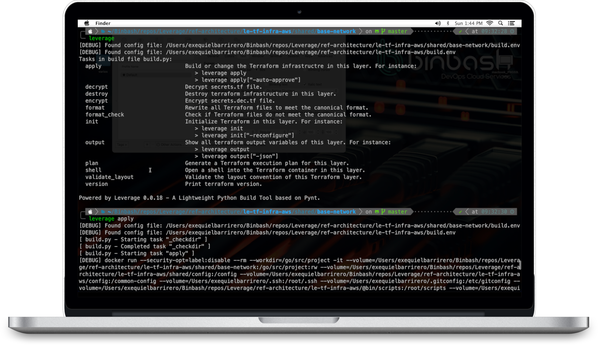

Leverage Reference Architecture
Reference AWS Cloud Solutions architecture designed under optimal configs for the most popular
modern web and mobile applications needs.
Its design is fully based on the
AWS
Well Architected Framework.
With its complete Leverage DevOps Automation Code Library to rapidly implement it, Leverage will solve your entire infrastructure and will grant you complete control of the source code, and of course you'll be able to run it without us.
Get started Go to GitHub

What is Leverage?
Our focus is on creating reusable, high quality AWS Cloud Infrastructure code, such as our Reference AWS Cloud Solutions Architecture. backed by our DevOps Automation Code Library. Because all the code and modules are already built, we can get you up and running at least 2x faster 🚀 than a consulting company (✅ typically in just few months!) on top of code that is thoroughly documented, tested, and has been proven in production at dozens of other project deployments by our Engineering Support Team.

Why Leverage?
You implement Reference AWS Cloud Solutions Architecture via our DevOps Automation Code Library and you get your entire Cloud Native Application Infra in few months. Leverage will solve your entire infrastructure and will grant you complete control of the source code, and of course you'll be able to run it without us.
Implement yourself or we implement it for you! 💪